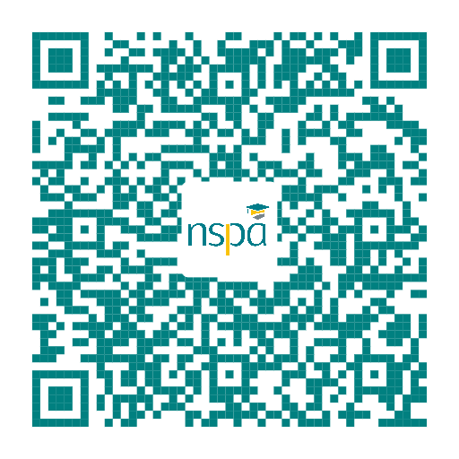

NSPA26 · October 21, 2026 · 3:30–5:00 PM CT
Trust, Transparency, and AI
Responsible scholarship review
Keep the participant materials
PDFParticipant workbook11 pages with nine activities, the shared rubric, and space for my notesPDFPresentation PDF28 slides for viewing and sharingPDFSession takeawaysTwo-page reference for evidence checks, clear rules, and a four-week pilotPPTXResponsible scholarship review infographics7 infographics for scholarship review teams
Return to these handouts
Scan for the workshop resource post, or save this direct handout address for later.


My success criteria
![My success criteria. Trust, Transparency, and AI. What am I learning today? I am learning to choose a limited AI task, check evidence, and write clear applicant and reviewer rules. Why am I learning this? Clear rules and human checks protect applicant trust and support fair, explainable decisions. How will I know I learned it? I can: Sort tasks into ASSIST, CHECK, or HUMAN, and name a safeguard. Check approved use and use only the data the task needs. Repair a prompt with a task, source, evidence requirement, and limit. Audit claims, apply the shared rubric, and keep a source-linked handoff. Compare equivalent excerpts using the same scoring anchors. Apply clear applicant rules and review detector flags with evidence. Draft applicant, reviewer, and concern-response policy sentences. Plan a four-week pilot with a task, human check, owner, and date.](images/success-criteria.png)